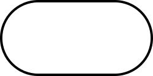
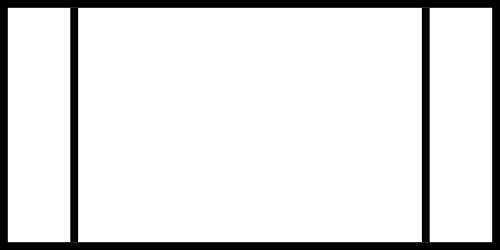

Vooskeem on skeem, mis kujutab töövoogu või protsessi. Vooskeemi
võib defineerida ka algoritmi skemaatilise esitlusena, mis näitab
etapiviisilist lähenemist ülesande lahendamisele.
Vooskeemil kujutatakse protsessi või etapiviisilise lahenduse osi
geomeetriliste kujunditega, mis on ühendatud voojoontega. Vooskeeme
kasutatakse mitmes valdkonnas protsessi või programmi analüüsimisel
disainimisel, dokumenteerimisel või haldamisel.
Kolm põhilist vooskeemitüüpi: süsteemi vooskeem, üldine vooskeem,
detailne vooskeem. Lahenduste planeerimises on praktiliselt kasutuses
vaid süsteemi ja programmi vooskeemid.
| Kujund | Nimetus | Kirjeldus |
|---|---|---|
| Põhijoon (koos nooleotsaga) |
Joon, mis väiljub ühest sümbolist ning viitab teisele.
Näitab protsessi tööjärjekorda. Nooleotsa kasutatakse vajadusel voo suuna näitamiseks või loetavuse parandamiseks. |
|
|
 |
Otspunkt (ingl terminator) | Tähistab väliskeskkonnast sisenemist või sinna väljumist, näiteks programmivoo algust või lõppu. |
| Protsess |
Tähistab mistahes töötlusfunktsiooni, näiteks jada tegevustest, mille tulemuseks on andmete väärtuse, vormi või asukoha muutumine. |
|
| Otsus |
Tähistab otsust või funktsiooni, millel on üks sisend kuid mitu üksteist välistavat väljundit. Väärtustamisele vastavad tulemused võivad olla kirjutatud vastavate väljunditeed tähistavate joonte kõrvale. |
|
| Andmed | Tähistab täpsustamata sisend- või väljundmeediumiga andmeid. | |
|
 |
Eeldefineeritud protsess |
Tähistab nimega protsessi, mis koosneb ühest või mitmest programmi sammust, mis on täpsustatud mujal. |
| Konnektor | Tähistab sama vooskeemi teisest osast sisenemit või teise osasse väljumist. |